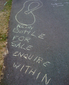

404
Looking for something? Really old content might not be here, as I pruned most of the content out of the blog from earlier than 2008 with the exception of some posts about Haskell that got a bit of traffic (and therefore I assume were useful to visitors). There's also a chance that what you were looking for wasn't here in the first place, or maybe you were looking for this page, in which case here you are.